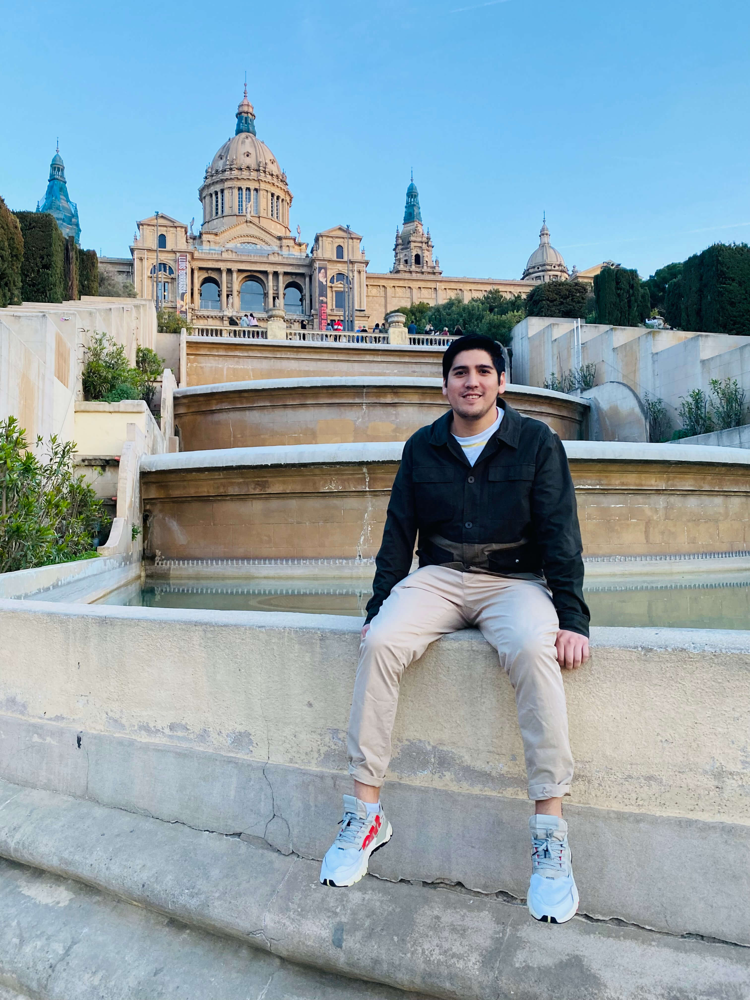

Buenos dias,
soy Cristian
Soy un web developer y optimista
Acerca de
Quien es Cristian?
Un desarrollador front-end impulsado por la curiosidad y con habilidades de diseño.
Me apasiona dar vida a los aspectos técnicos y visuales de los productos digitales. La experiencia del usuario, los hermosos píxeles y la escritura limpia y accesible, el código humano es importante para mí. Sudo los detalles. Y como seguidor de Las Leyes De Simplicidad de John Maeda , estoy de acuerdo en que menos es más.
Tengo una Licenciatura en Diseño Multimedia de La Universidad De Curtin 🇦🇺, un Certificado de Desarrollo Web Inmersivo de Juno College (Anteriormente HackerYou) 🇨🇦 (¡y una Licencia de Buceo Avanzado de PADI 🇵🇭!)
Soy más feliz cuando creo, aprendo, exploro y pienso en cómo mejorar las cosas. Actualmente resolviendo problemas aparentemente simples en UsePastel.Com . No estoy disponible para ningún trabajo independiente, ¡pero no dudes en comunicarte y saludar!
Habilades y Herramientas
Mi caja de herramientas y cosas que puedo hacer
Las habilidades, herramientas y tecnologias que utilizo para darle via sus productos:
- HTML5
- CSS3
- JavaScript
- React
- Git
- Sass
- Command Line
- Vs code
- Responsive Websites
Trabajar
Una selección de cosas que he construido
Noche de cita personal
Para cuando necesitas un descanso de tu pareja pero ya tienes niñera. Ahora las parejas pueden acudir a diferentes eventos en lugares similares y al mismo tiempo. Un proyecto de programación grupal con Can Rozanes , Irene Truong y Jamie Yeung .